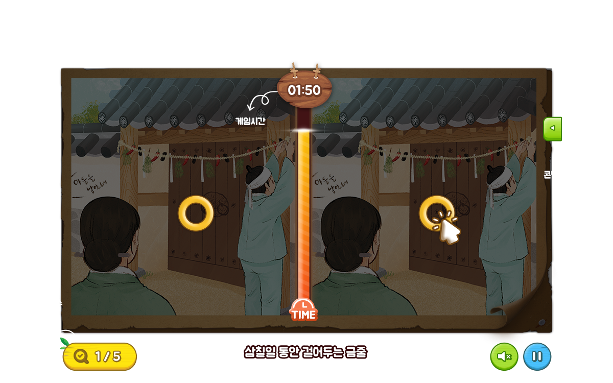

삼칠일 동안 걸어두는 금줄
출생의례 ＞ 출생의례의 절차와 풍습
아이가 태어나면 대문앞에 금줄을 걸었는데, 부정한 것을 막기 위해 정화의 의미가 담긴 물건을 꽂았다.남자아이의 경우는 빨간 고추를 달았는데 고추의 빨간색과 매운맛은 귀신을 쫓아내주는 의미를 담고 있다. 지역에 따라 나쁜 것이 들어오지 못하게 하는 정화의 의미의 숯을 함께 달기도 했다.
연관 이야기자료(9)
-
- 첫 이발, 배냇머리 자르기
- 배냇머리 자르기는 태어난 아이의 머리카락을 처음 잘라주는 행위를 말한다. 잘라주는 시기는
생활문화 > 한국인의 통과의례, 관혼상제|출생의례 > 출생의례의 절차와 풍습
-
- 태어나 처음 입는 옷, 배냇저고리
- 태어난지 사흘째(3일) 되는 아침에 처음으로 목욕을 하고 아기가 입는 옷으로 배내옷 혹은 깃저고리라고 부른다. 깃 없
생활문화 > 한국인의 통과의례, 관혼상제|출생의례 > 출생의례의 절차와 풍습
-
- 금줄에도 걸리는 한국인이 좋아하는 매운 맛 고추
- 고추는 남아메리카 원산으로 밭에서 재배하는 한해살이풍이다. 조선 후기에 일본과 중국을 거쳐
생활문화 > 한국인의 통과의례, 관혼상제|출생의례 > 출생의례의 절차와 풍습
-
- 경기도의 출생의례
- 경기도 양주에서는 농사지어 처음 찐 쌀을 창호지에 싸서 달아두었다. 이를 삼신주머니라 부르며, 고깔을 씌우기도 했다
생활문화 > 한국인의 통과의례, 관혼상제|출생의례 > 지역별 출생의례
-
- 강원도의 출생의례
- 강원도 지역의 기자의례(아들을 기원하는 의례)로는 산메기가 있다. 명절이나 봄, 가을에 좋은 날을 받아 삼신을 받는 의
생활문화 > 한국인의 통과의례, 관혼상제|출생의례 > 지역별 출생의례
-
- 경상도의 출생의례
- 경기도 양주에서는 농사지어 처음 찐 쌀을 창호지에 싸서 달아두었다. 이를 삼신주머니라 부르며, 고깔을 씌우기도 했다
생활문화 > 한국인의 통과의례, 관혼상제|출생의례 > 지역별 출생의례
-
- 충청도의 출생의례
- 출생의례는 새로운 생명을 기원하거나 태어난 생명을 무탈하게 키워내기 위하여 행하는 의례를 말한다. 아이 낳기를 기
생활문화 > 한국인의 통과의례, 관혼상제|출생의례 > 지역별 출생의례
-
- 충청도의 출생의례
- 출생의례는 새로운 생명을 기원하거나 태어난 생명을 무탈하게 키워내기 위하여 행하는 의례를 말한다. 아이 낳기를 기
생활문화 > 한국인의 통과의례, 관혼상제|출생의례 > 지역별 출생의례
게임 설명
화면의 좌측과 우측의 그림을 비교해 다른 부분을 클릭해주세요.
정해진 개수만큼 모두 찾아 게임을 클리어하고, 그림 속 재미있는 지역문화 이야기도 함께 감상해보세요.
정해진 개수만큼 모두 찾아 게임을 클리어하고, 그림 속 재미있는 지역문화 이야기도 함께 감상해보세요.
